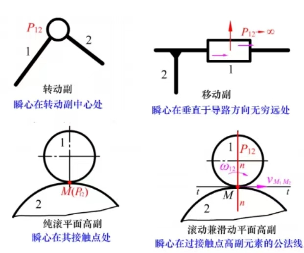

机械原理
第一章 绪论
研究对象及基本内容：
机械（machinery）：机构（mechanism）和机器（machine）的总称
机构：一种用来传递与变化运动与力的可动装置
机器：通常是根据某种使用要求而设计的用于变换或传递能量、物料和信息的执行机械运动的装置
第二章 机构的结构分析
机构的组成
零件：制造的单元体
构件：刚性连接在一起的零件共同组成的一个独立的运动单元体
构件是组成机构的基本要素之一。从运动的角度看，任何机器都是由两个以上构件组合而成的

运动副：由两个构件直接接触且组成的可动的连接
运动副的分类：
按约束度分：
- 约束度为1的运动副称为Ⅰ级副（class Ⅰ pairs）
- 约束度为2的运动副称为Ⅱ级副（class Ⅱ pairs）
- ……
按自由度分：
- 自由度为1的运动副称为Ⅰ类副（Ⅰ Pair）
- 自由度为2的运动副称为Ⅱ类副（Ⅱ Pair）
- ……
按构成运动副的两构件接触情况分：
- 通过单一点或线接触而构成的运动副称为高副（higher pair）
- 通过面接触而构成的运动副称为低副（lower pair）
运动链（kinematic chain）：构建通过运动副的连接而构成的可相对运动的系统
机构（mechanism）：在运动链中，若使其中某一构件加以固定使其成为机架（fixed link），则该运动链便成为机构，亦即具有机架的运动链称为机构
- 主动件（原动件，driving link）：机构中按给定的已知运动规律独立运动的构件，图中以箭头示意运动方向。
- 从动件（drived link）：机构中除主动件外的构件，其运动规律取决于主动件的运动规律和机构的结构及个构件尺寸。
机构的运动确定性及其自由度分析
第三章 平面机构的运动分析
第一节 速度瞬心法作机构的速度分析
速度瞬心（瞬心）：互作平面相对运动的两构件上速度相等的重合点，常用符号\(P_{ij}\)表示构件i、j间的瞬心，且\(i < j\)
- 绝对瞬心：瞬心处绝对速度为0
- 相对瞬心：瞬心处绝对速度不为0
瞬心数量（K）：由N个构件（含机架）组成的机构的瞬心总数\(K=\frac{N(N-1)}{2}\)
瞬心位置：
- 直接相连两构件
- 以转动副相连的两构件：转动副中心处
- 以移动副项链的两构件：垂直于导路方向的无穷远处
- 以平面高副相连接的两构建（高副两元素作纯滚动）：接触点处
- 以平面高副相连接的两构建（高副两元素有相对滑动）：过接触点高副元素的公法线上

第三种情况（高副两元素作纯滚动）很少见
- 不直接相连两构件
- 三心定理：为了满足瞬心等速的条件，三个彼此作平面平行运动构件的三个瞬心必位于同一直线上